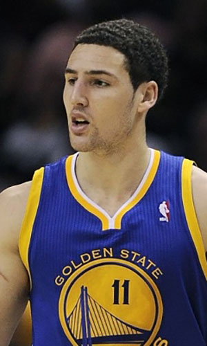

|  |
Матчи |
77 |
|
Передачи (всего/среднее) |
221 |
2.9 |
| В основе |
77 |
|
Подборы в защите (всего/среднее) |
219 |
2.8 |
| Время (всего/среднее) |
2454:34 |
31:53 |
Подборы в атаке (всего/среднее) |
27 |
0.4 |
| Очки (всего/среднее) |
1668 |
21.7 |
Подборы (всего/среднее) |
246 |
3.2 |
| 2-очковые броски (всего/среднее) |
363/754 |
4.7/9.8 |
Перехваты (всего/среднее) |
87 |
1.1 |
| 2-очковые броски (% реализации) |
48.1% |
|
Потери (всего/среднее) |
149 |
1.9 |
| 3-очковые броски (всего/среднее) |
239/535 |
3.1/7.1 |
Блокшоты (всего/среднее) |
60 |
0.8 |
| 3-очковые броски (% реализации) |
43.9% |
|
Блокшоты соперника (всего/среднее) |
51 |
0.7 |
| Штрафные броски (всего/среднее) |
225/256 |
2.9/3.3 |
Фолы (всего/среднее) |
122 |
1.6 |
| Клэй Томпсон |
Штрафные броски (% реализации) |
87.9% |
|
Коэффициент полезности (всего/среднее) |
1232 |
16 |